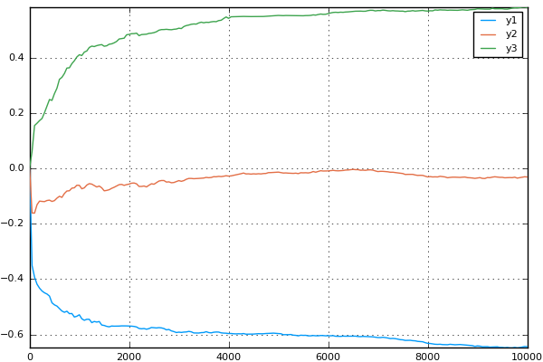

Callbacks
While an OnlineStat is being updated, you may wish to perform an action like print intermediate results to a log file or update a plot. For this purpose, OnlineStats exports a map_rows function.
map_rows(f::Function, b::Integer, data...)
map_rows works similar to Base.map, but passes the arguments to the function in batches of size b. It is best used with Julia's do block syntax.
Example 1
Input
y = randn(100) o = Mean() map_rows(20, y) do yi fit!(o, yi) info("value of mean is $(mean(o))") end
Output
INFO: value of mean is 0.06340121912925167 INFO: value of mean is -0.06576995293439102 INFO: value of mean is 0.05374292238752276 INFO: value of mean is 0.008857939006120167 INFO: value of mean is 0.016199508928045905
Example 2
Input
using Plots; pyplot() y = randn(10_000) o = QuantileMM(LearningRate(.7), tau = [.25, .5, .75]) plt = plot([0], zeros(3, 1)) # initialize plot map_rows(50, y) do yi # for each batch of 50 observations fit!(o, yi, 5) # fit in minibatches of 5 push!(plt, nobs(o), value(o)) # Add a value to the plot end display(plt)
Output

Example 3
Input
x = randn(1000, 5) β = collect(1.:5) y = x * β + randn(1000) o = LinReg(5) map_rows(100, x, y) do xi, yi fit!(o, xi, yi) info("You have fit $(nobs(o)) observations") end
Output
INFO: You have fit 100 observations INFO: You have fit 200 observations INFO: You have fit 300 observations INFO: You have fit 400 observations INFO: You have fit 500 observations INFO: You have fit 600 observations INFO: You have fit 700 observations INFO: You have fit 800 observations INFO: You have fit 900 observations INFO: You have fit 1000 observations